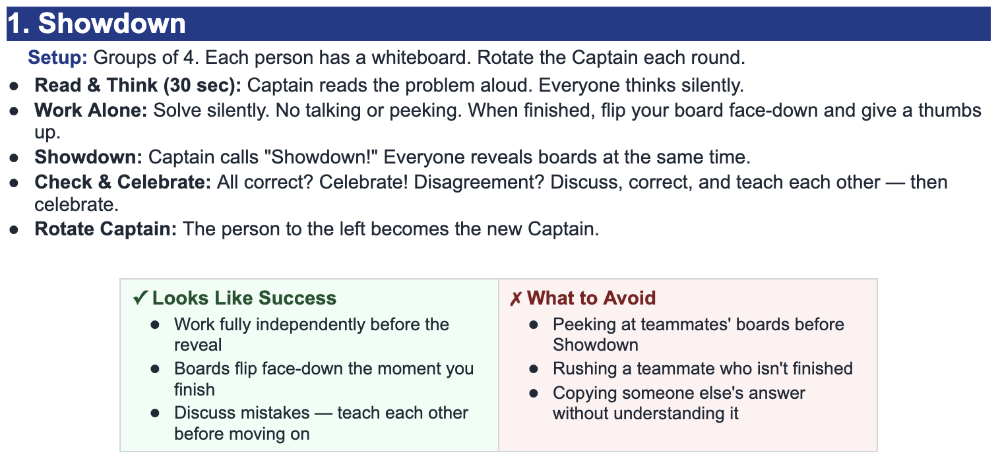

Solve and check for extraneous solutions: $$\log(x-2)+\log(x-5)=\log 21$$
Domain restrictions: \(x-2>0\) and \(x-5>0\), so \(x>5\).
Combine the logarithms:
$$ \log[(x-2)(x-5)] = \log 21 $$Set the arguments equal:
$$ (x-2)(x-5)=21 $$ $$ x^2-7x+10=21 $$ $$ x^2-7x-11=0 $$Use the quadratic formula:
$$ x=\frac{7\pm\sqrt{49+44}}{2}=\frac{7\pm\sqrt{93}}{2} $$Check both values:
Solution: $$x=\frac{7+\sqrt{93}}{2}$$
Solve and check for extraneous solutions: $$\ln(x-3)+\ln(x-7)=\ln 18$$
Domain restrictions: \(x>7\).
Combine the logarithms:
$$ \ln[(x-3)(x-7)] = \ln 18 $$ $$ (x-3)(x-7)=18 $$ $$ x^2-10x+21=18 $$ $$ x^2-10x+3=0 $$Use the quadratic formula:
$$ x=\frac{10\pm\sqrt{100-12}}{2}=\frac{10\pm\sqrt{88}}{2}=5\pm\sqrt{22} $$Check both values:
Solution: $$x=5+\sqrt{22}$$
Solve and check for extraneous solutions: $$\log(x-4)-\log(x-9)=\log 3$$
Domain restrictions: \(x-4>0\) and \(x-9>0\), so \(x>9\).
Use the quotient property:
$$ \log\left(\frac{x-4}{x-9}\right)=\log 3 $$Set the arguments equal:
$$ \frac{x-4}{x-9}=3 $$ $$ x-4=3x-27 $$ $$ 23=2x $$ $$ x=\frac{23}{2} $$Check: \(\frac{23}{2}>9\), so it is valid.
Solution: $$x=\frac{23}{2}$$
Solve and check for extraneous solutions: $$\ln(x+5)-\ln(x-2)=\ln 4$$
Domain restrictions: \(x+5>0\) and \(x-2>0\), so \(x>2\).
Use the quotient property:
$$ \ln\left(\frac{x+5}{x-2}\right)=\ln 4 $$ $$ \frac{x+5}{x-2}=4 $$ $$ x+5=4x-8 $$ $$ 13=3x $$ $$ x=\frac{13}{3} $$Check: \(\frac{13}{3}>2\), so it is valid.
Solution: $$x=\frac{13}{3}$$
Solve and check for extraneous solutions: $$\log(x-3)+\log(x-8)=\log 20$$
Domain restrictions: \(x>8\).
Combine the logarithms:
$$ \log[(x-3)(x-8)] = \log 20 $$ $$ (x-3)(x-8)=20 $$ $$ x^2-11x+24=20 $$ $$ x^2-11x+4=0 $$Use the quadratic formula:
$$ x=\frac{11\pm\sqrt{121-16}}{2}=\frac{11\pm\sqrt{105}}{2} $$Check both values:
Solution: $$x=\frac{11+\sqrt{105}}{2}$$
Solve and check for extraneous solutions: $$\ln(x^2-16)=2$$
Domain restriction: \(x^2-16>0\), so \(|x|>4\).
Rewrite in exponential form:
$$ x^2-16=e^2 $$ $$ x^2=e^2+16 $$ $$ x=\pm\sqrt{e^2+16} $$Both values satisfy \(|x|>4\), so both are valid.
Solutions: $$x=\pm\sqrt{e^2+16}$$
Solve and check for extraneous solutions: $$\log(x-6)+\log(x-10)=\log 24$$
Domain restrictions: \(x>10\).
Combine the logarithms:
$$ \log[(x-6)(x-10)] = \log 24 $$ $$ (x-6)(x-10)=24 $$ $$ x^2-16x+60=24 $$ $$ x^2-16x+36=0 $$Use the quadratic formula:
$$ x=\frac{16\pm\sqrt{256-144}}{2}=\frac{16\pm\sqrt{112}}{2}=8\pm 2\sqrt7 $$Check both values:
Solution: $$x=8+2\sqrt7$$
Solve and check for extraneous solutions: $$\log(x-1)=\log(11-x)$$
Domain restrictions: \(x-1>0\) and \(11-x>0\), so \(1 Set the arguments equal: Check: \(6\) is in the interval \(1 Solution: $$x=6$$
Solve and check for extraneous solutions: $$\ln(x+2)+\ln(x-4)=\ln 32$$
Domain restrictions: \(x+2>0\) and \(x-4>0\), so \(x>4\).
Combine the logarithms:
$$ \ln[(x+2)(x-4)] = \ln 32 $$ $$ (x+2)(x-4)=32 $$ $$ x^2-2x-8=32 $$ $$ x^2-2x-40=0 $$Use the quadratic formula:
$$ x=\frac{2\pm\sqrt{4+160}}{2}=\frac{2\pm\sqrt{164}}{2}=1\pm\sqrt{41} $$Check both values:
Solution: $$x=1+\sqrt{41}$$
Solve and check for extraneous solutions: $$\log(x^2-25)=1$$
Domain restriction: \(x^2-25>0\), so \(|x|>5\).
Rewrite in exponential form:
$$ x^2-25=10 $$ $$ x^2=35 $$ $$ x=\pm\sqrt{35} $$Since \(\sqrt{35}\approx 5.92\), both values satisfy \(|x|>5\).
Solutions: $$x=\pm\sqrt{35}$$
Solve and check for extraneous solutions: $$\ln(x-2)-\ln(x-6)=\ln 2$$
Domain restrictions: \(x>6\).
Use the quotient property:
$$ \ln\left(\frac{x-2}{x-6}\right)=\ln 2 $$ $$ \frac{x-2}{x-6}=2 $$ $$ x-2=2x-12 $$ $$ x=10 $$Check: \(10>6\), so it is valid.
Solution: $$x=10$$
Solve and check for extraneous solutions: $$\log(x-4)+\log(x-5)=\log 14$$
Domain restrictions: \(x>5\).
Combine the logarithms:
$$ \log[(x-4)(x-5)] = \log 14 $$ $$ (x-4)(x-5)=14 $$ $$ x^2-9x+20=14 $$ $$ x^2-9x+6=0 $$Use the quadratic formula:
$$ x=\frac{9\pm\sqrt{81-24}}{2}=\frac{9\pm\sqrt{57}}{2} $$Check both values:
Solution: $$x=\frac{9+\sqrt{57}}{2}$$
Solve and check for extraneous solutions: $$\log(x+1)-\log(x-7)=\log 5$$
Domain restrictions: \(x+1>0\) and \(x-7>0\), so \(x>7\).
Use the quotient property:
$$ \log\left(\frac{x+1}{x-7}\right)=\log 5 $$ $$ \frac{x+1}{x-7}=5 $$ $$ x+1=5x-35 $$ $$ 36=4x $$ $$ x=9 $$Check: \(9>7\), so it is valid.
Solution: $$x=9$$
Solve and check for extraneous solutions: $$\ln(x-5)+\ln(x-9)=\ln 12$$
Domain restrictions: \(x>9\).
Combine the logarithms:
$$ \ln[(x-5)(x-9)] = \ln 12 $$ $$ (x-5)(x-9)=12 $$ $$ x^2-14x+45=12 $$ $$ x^2-14x+33=0 $$Factor the quadratic:
$$ (x-11)(x-3)=0 $$Check both candidates against \(x>9\):
Solution: $$x=11$$
Solve and check for extraneous solutions: $$\log(x-7)=\log(19-x)$$
Domain restrictions: \(x>7\) and \(x<19\), so \(7 Set the arguments equal: Check: \(13\) is in the domain interval, so it is valid. Solution: $$x=13$$
Solve and check for extraneous solutions: $$\ln(x^2-4)=3$$
Domain restriction: \(x^2-4>0\), so \(|x|>2\).
Rewrite in exponential form:
$$ x^2-4=e^3 $$ $$ x^2=e^3+4 $$ $$ x=\pm\sqrt{e^3+4} $$Both solutions satisfy \(|x|>2\), so both are valid.
Solutions: $$x=\pm\sqrt{e^3+4}$$
Solve and check for extraneous solutions: $$\log(x-3)+\log(x-9)=\log 18$$
Domain restrictions: \(x>9\).
Combine the logarithms:
$$ \log[(x-3)(x-9)] = \log 18 $$ $$ (x-3)(x-9)=18 $$ $$ x^2-12x+27=18 $$ $$ x^2-12x+9=0 $$Use the quadratic formula:
$$ x=\frac{12\pm\sqrt{144-36}}{2}=\frac{12\pm\sqrt{108}}{2}=6\pm 3\sqrt3 $$Check both values:
Solution: $$x=6+3\sqrt3$$
Solve and check for extraneous solutions: $$\ln(x+6)-\ln(x-3)=\ln 3$$
Domain restrictions: \(x>3\).
Use the quotient property:
$$ \ln\left(\frac{x+6}{x-3}\right)=\ln 3 $$ $$ \frac{x+6}{x-3}=3 $$ $$ x+6=3x-9 $$ $$ 15=2x $$ $$ x=\frac{15}{2} $$Check: \(\frac{15}{2}>3\), so it is valid.
Solution: $$x=\frac{15}{2}$$
Solve and check for extraneous solutions: $$\log(x-9)+\log(x-12)=\log 28$$
Domain restrictions: \(x>12\).
Combine the logarithms:
$$ \log[(x-9)(x-12)] = \log 28 $$ $$ (x-9)(x-12)=28 $$ $$ x^2-21x+108=28 $$ $$ x^2-21x+80=0 $$Factor the quadratic:
$$ (x-16)(x-5)=0 $$Check both candidates against \(x>12\):
Solution: $$x=16$$
Solve and check for extraneous solutions: $$\log(x-4)=\log(12-x)$$
Domain restrictions: \(x>4\) and \(x<12\), so \(4 Set the arguments equal: Check: \(8\) is in the domain interval, so it is valid. Solution: $$x=8$$
1. \(x=\frac{7+\sqrt{93}}{2}\)
2. \(x=5+\sqrt{22}\)
3. \(x=\frac{23}{2}\)
4. \(x=\frac{13}{3}\)
5. \(x=\frac{11+\sqrt{105}}{2}\)
6. \(x=\pm\sqrt{e^2+16}\)
7. \(x=8+2\sqrt7\)
8. \(x=6\)
9. \(x=1+\sqrt{41}\)
10. \(x=\pm\sqrt{35}\)